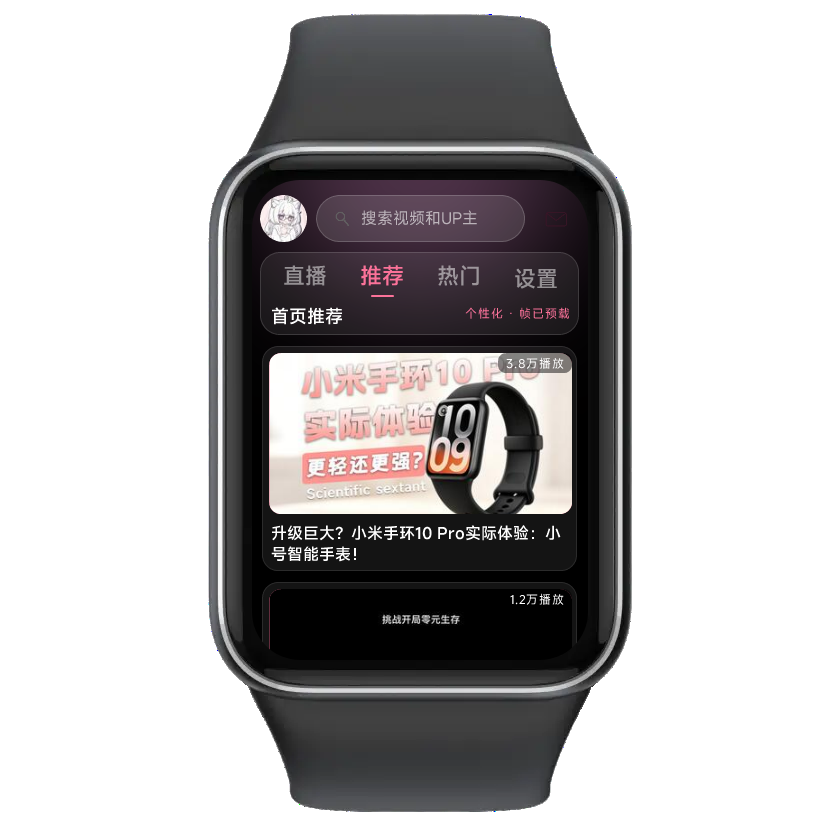
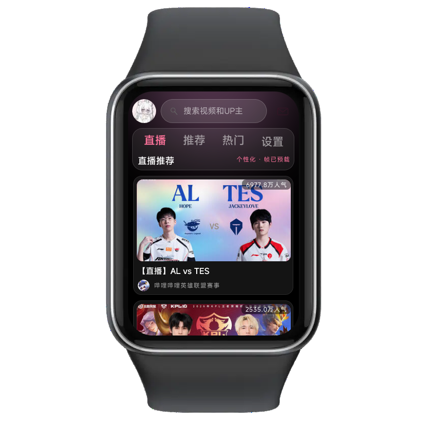

WristBili 腕上B站 —— 面向智能手环与手表的 B 站客户端。视频拆帧播放、弹幕、评论、动态、搜索、收藏，一块小屏幕也能刷 B 站。
在小米手环上跑起来的 WristBili，首页推荐、直播、视频播放都是原生界面。


专为手环交互重做，不是把手机界面缩小。
拆帧 / 雪碧图双通道播放，服务器取帧可到 30fps，弱网自动回退转码。
弹幕轨道叠加显示，评论、楼中楼、点赞都能在表盘上完成。
关键词搜索、热门排行、分区浏览，内置手环专用输入法。
横屏沉浸播放，第一遍即全屏，进度条与倍速可切换。
一键生成视频要点，长视频不用从头看到尾。
手机 Termux 或电脑即可搭服务器，局域网、公网隧道都能连。
推荐通过官方渠道安装，可第一时间收到更新。
已在「表盘自定义工具」上架，在 App 内搜索「WristBili」即可一键安装到手环。
在工具内搜索 WristBili已在 OronBox 上架，安装应用后搜索「WristBili」即可直接推送到设备。
在 OronBox 内搜索 WristBili已在 OrbitM 上架，打开应用商店搜索「WristBili」即可获取最新版本。
在 OrbitM 内搜索 WristBili安装包为开源免费软件，请勿用于商业售卖。遇到问题欢迎加入官方 QQ 群反馈。
移植到 vivo 蓝河 OS（BlueOS）的版本，界面与素材对齐 Vela 版，为 vivo Watch 系列手表适配。
蓝河版仍在适配中：视频画面依赖 B 站雪碧图与自建取帧服务，遇到显示异常欢迎在群里反馈机型与系统版本。
给不支持 fetch 的设备准备的兼容版本。手环端不再直接联网，改由手机上的同步器代取数据再下发。
适配作者 羊羽Wes。这是测试版，功能与主线 3.1.0 不同步；设备本身支持 fetch 的请直接下载上方正式版。
先看视频，再照着下面的顺序装，几分钟就能跑起来。
播放不了？在 B 站观看教程
视频里演示的界面若与你手上的版本略有差异，以视频步骤为准；仍连不上可以到 QQ 群 827739055 反馈。
基于 Vela 快应用框架，代码公开、无广告、无内购。
手机装 Termux 就能跑，也可以放在电脑或 NAS 上。
公网访问可用内网穿透，把 3000 端口映射出去即可，手环地址换成 https 链接。